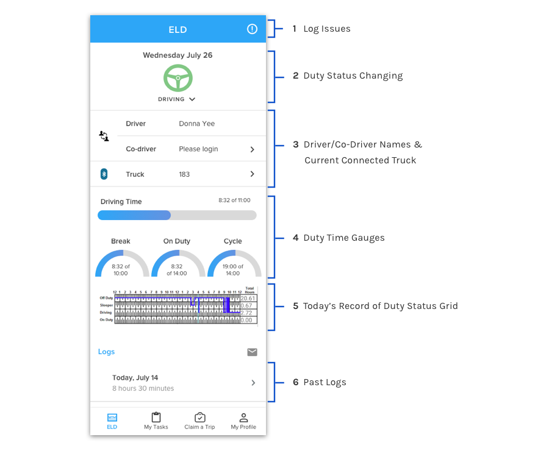

UNIS Drive - DVIR
Summer 2017 - Launched in May 2018

UNIS Drive is a mobile app aimed to help company truck drivers more easily complete their day-to-day tasks. This case study specifically focuses on the DVIR (Driver Vehicle Inspection Report) portion of the app. The DVIR is a report every truck driver must complete before and after their daily tasks to ensure safe operation of their vehicle. I collaborated very closely with the product owner and engineering team on this project.
- Gathered and understood DVIR requirements
- Created high-fidelity mockups of the solutions
- Created screenflow graphics for easier hand-off to developers
- Led user acceptance testing
All truck drivers are required to inspect their truck prior to driving (pre-trip inspection) and after driving (post-trip inspection) everyday. This is a regulation mandated by the Department of Transportation to ensure driver and roadside safety. A thorough truck inspection should take around 15 minutes to complete. Should a vehicle have any defects, it should be marked on the report and given to a mechanic to be fixed and signed off on.

The previous design of the DVIR required the drivers to take photos of the front, back, and sides of the truck. The designers designed it this way in an attempt to force the driver to walk around their truck. But the problem with that was a lot of the the drivers were taking random pictures to skip through this tedious process.
Problem for the Business
The company needed to address the problem of non-compliant drivers uploading random photos in place of proper photos of their truck. Our company had been randomly selected by the Department of Transportation to be audited for how closely we follow the safety and compliance requirements. This was when the business requirements really kicked our butts.
-Lauren Wilson, Former Driver and Current Safety & Compliance Manager
Gathering Requirements

User Requirements
- Fast inspection
- Large touchpoints
- High contrast colors
- Large text and buttons
- Move away from tedious paper reports

Business Requirements
- Accurate translation of the paper inspection to an electronic inspection
- More visibility to company mechanics on the maintenance status of company vehicles
- Force drivers to be more compliant than they are currently
Researching the Guided Inspection
After gathering the requirements and understanding the problem, Jackie and I broke down this information by sketching out different designs to fulfill the business and user needs.
We each ideated 2-3 screen ideas for each major requirement and came back together to share them with each other. During this process we identified reusable UI elements and consolidated them into symbols in Sketch. This helped cut down on time wasted when translating our design from low to high fidelity and from high fidelity to development.

We picked the best ideas from each other’s sketches and combined them into a single design. One major requirement we ideated was the elements on the home screen. We made sure to keep all the important information on one screen so that it’s easily accessible to drivers.

Using my background in Computer Science, I created a reference document with all the possible edge cases we needed to design for, such as the error state, empty state, and filled state.
We decided that it was best to test within our company first to discover the more obvious issues, fix those, and then test with drivers. Two major insights we found when testing internally:

I then rectified these issues through several iterations.

After refining our designs, we had actual company drivers test our prototype. I created an interactive Marvel prototype using our modified high fidelity mockups for user testing.
One major issue we discovered was that there were currently “too many pages to go through just to add a note”. We realized that we had overlooked a major part of the paper log process: the ability to write a note about why they switched to a particular duty status. We had this feature, but it was a bit “hidden” because we didn’t realize how important and frequently used this feature would be.
Iterate, Iterate, Iterate!

We touched up the final iteration based on user feedback, and were finally able to pass it over to the developers. Here is a preview of what the fully developed design looks like:
Learnings
This project taught me A LOT of things.
- The importance of gathering requirements before designing
- Version control is a very powerful and useful tool for both developers AND designers
- Having a style guide with reusable elements make design and hand off to developers much easier and faster
- As a designer, I can only speculate what a user would want. User testing gives important insight into what is actually useful for a user.